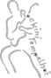
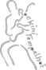

{% endif %}
{% endfor %}
{% endif %}
{% endfor %}

präsentiert von
{% for sponsor in site.data.sponsors %}
{% if sponsor.presenter %}
{% endif %}
{% endfor %}
Sponsoren
Das der ROCKTREFF auch im 32. Jahr noch für den Besucher bei freiem Eintritt stattfinden kann, ist wohl vor allem dem Verdienst der vielen ehrenamtlichen Helfer und Bands, die ohne Gage auftreten, zu verdanken. Nur ein kleiner Teil des gesamten benötigten Budgets wird vom Jugendamt Tempelhof- Schöneberg getragen. Den Großteil des Etats für das dreitägige Open Air stellen die akquirierten Sponsoren.
{% for sponsor in site.data.sponsors %}
{% if sponsor.main %}
{% endif %}
{% endfor %}
{% endif %}
{% endfor %}
Weitere Sponsoren
{% for sponsor in site.data.sponsors %} {% unless sponsor.presenter %} {% unless sponsor.main %}
{% endunless %}
{% endunless %}
{% endfor %}


- Veranstalter
-
Bezirksamt Tempelhof-Schöneberg von Berlin
Abteilung Jugend, Ordnung, Bürgerdienste
Büro des Bezirksstadtrates
JOB VM
Rathaus Friedenau
Niedstraße 1-2
12159 Berlin
+49 30 90277 4804
+49 30 90277 4805
jugendamt.ts-vm
Inhaltlich Verantwortlicher gem. § 55 RStV:
Bezirksstadtrat Oliver Schworck
- Träger der Veranstaltung
-
CPYE e.V.
Viktoriastraße 13 – 12105 Berlin - Kooperationspartner
-
ROCK-INI Tempelhof
Catering Company - Veranstaltungskoordinator & Sponsoringbeauftragter
-
Philipp Mengel
+49 176 6340 2665
jugendamt.ts-vm - Technische Veranstaltungsleitung
- Sven Perschmann
- Kontakt
- kontakt
 
